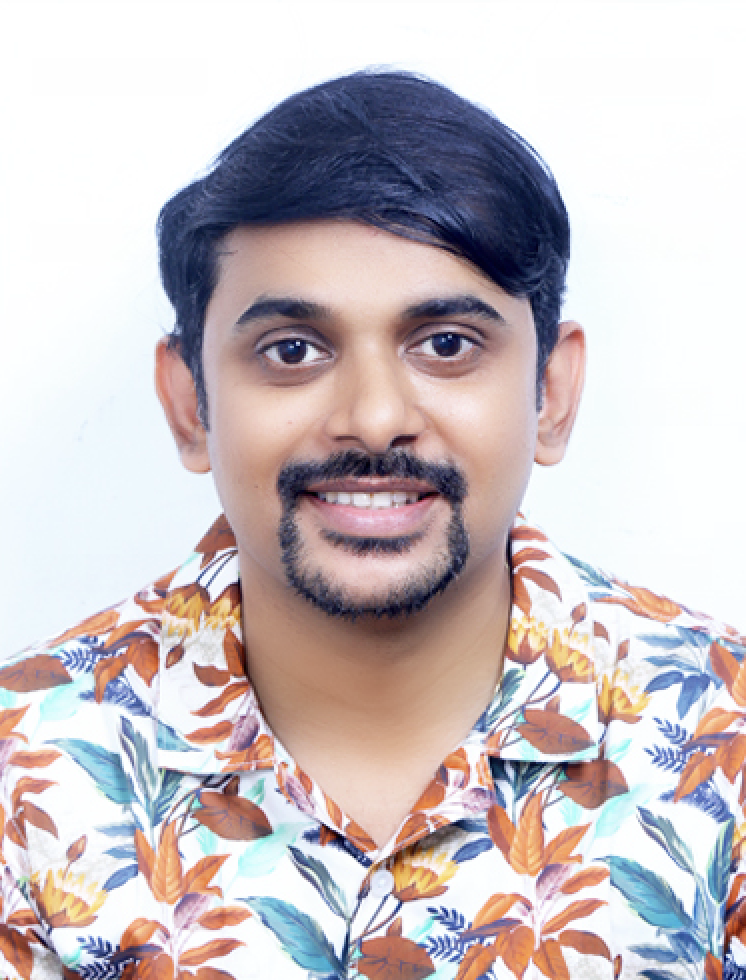

I'm Noel — a designer who turns dense, high-stakes enterprise data into something people actually understand. A decade across IBM and Cognizant. Based in Kochi, India.

I paint in watercolour and pour resin jewellery — trapping pigment, petals, and flecks of gold mid-set. It's the same instinct I bring to work: take something fluid and unruly, and hold it still long enough to be understood.
Colour, light, edge, restraint — the craft keeps my eye honest, and it shows up in every screen I ship.
Open to enterprise UX, Data & AI product design, and the occasional beautifully complex problem. Kochi — working with teams anywhere.